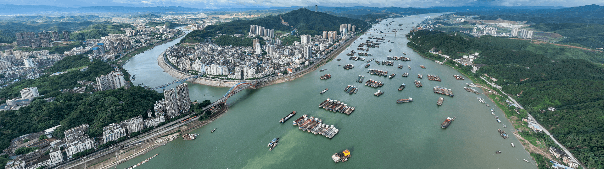

企业动态
梧州港务集团与央企签署战略合作协议
1月13日，梧州市港务发展集团与中交集团签署战略合作协议，双方将在港口建设、物流运营等领域深化合作...
及时了解港口动态和行业资讯

梧州市港务发展集团全力推进亿吨西江门户枢纽港建设，项目建设取得重大突破，预计年底前完成一期工程...


1月13日，梧州市港务发展集团与中交集团签署战略合作协议，双方将在港口建设、物流运营等领域深化合作...
 行业资讯
行业资讯
随着西江黄金水道建设的深入推进，内河航运迎来新的发展机遇，多式联运、智慧物流成为发展重点...
政策解读
自治区发布港口发展规划，明确提出建设北部湾国际门户港和西江内河枢纽港，梧州港被列为重点发展港口...
项目进展
梧州港智慧港口信息化系统建设项目进展顺利，预计3月份完成系统上线，将大幅提升港口运营效率...
企业动态
为确保港口安全生产，梧州港务集团组织开展年度安全生产大检查，全面排查安全隐患，强化安全管理...
 行业资讯
行业资讯
随着粤港澳大湾区建设深入推进，西江航运一体化发展迎来重大机遇，沿江港口协同发展成为新趋势...